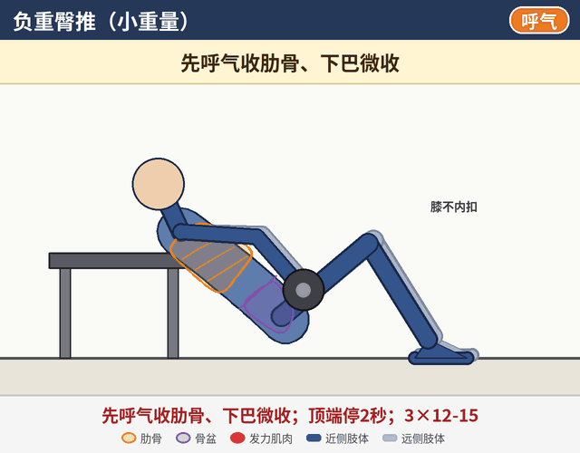
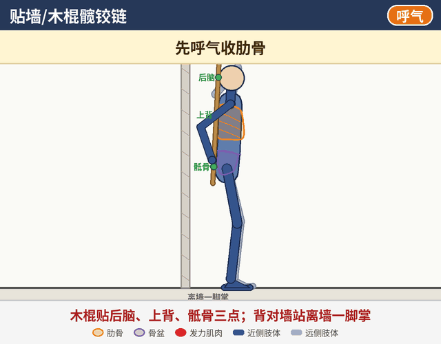
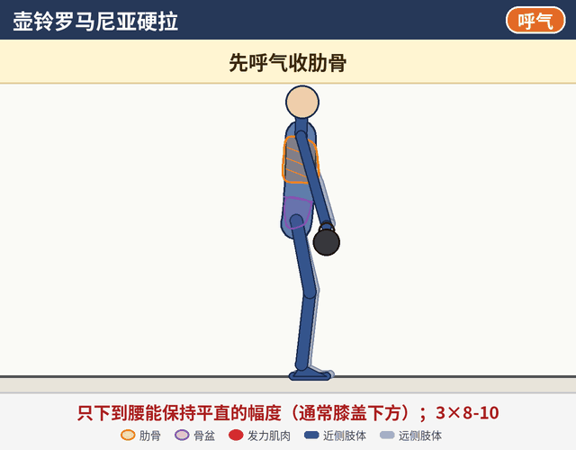
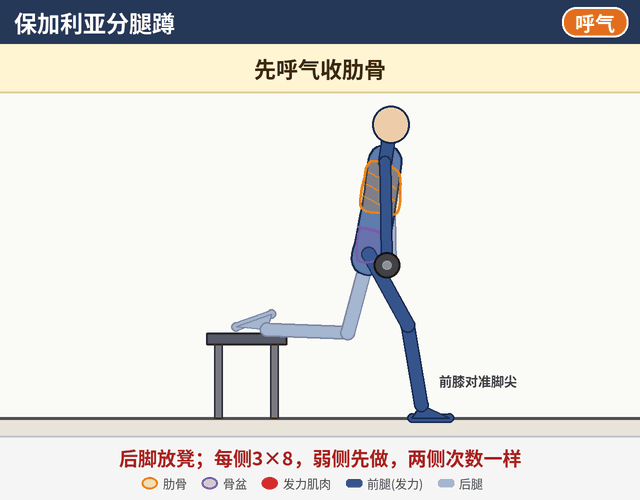
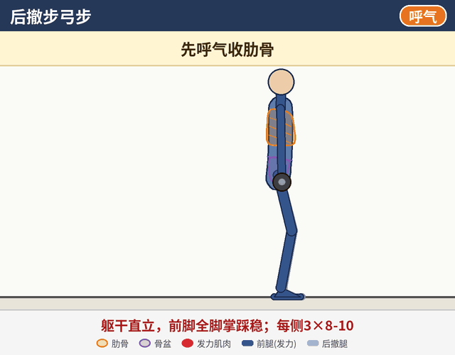
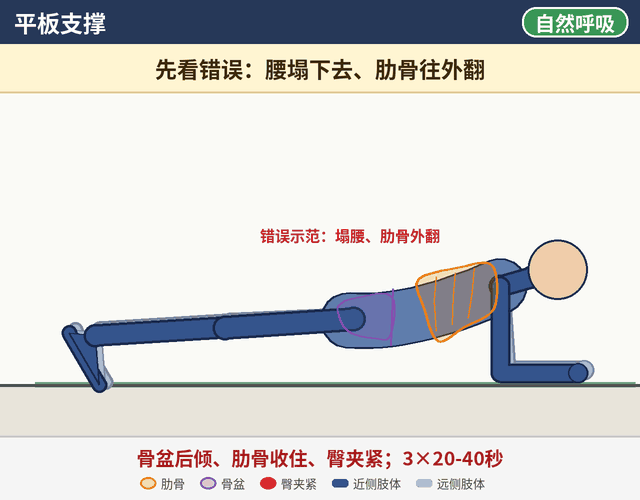
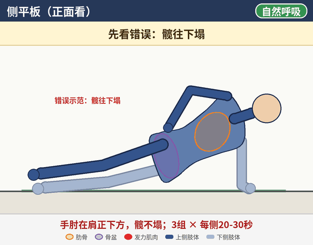
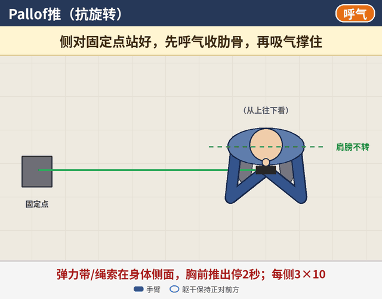

第二阶段：目标与安排
每周安排建议
- 每天：第一阶段激活热身，约10分钟（如90/90呼吸、死虫、臀桥、侧卧蚌式各1组）。
- 每周3次下肢/全身训练，隔天进行。
- 示例训练A：髋铰链（热身）、负重臀推、壶铃罗马尼亚硬拉、保加利亚分腿蹲、平板支撑。
- 示例训练B：负重臀推、深蹲、后撤步弓步、侧平板、Pallof推。
- 深蹲继续垫脚跟，用中等重量；卧推照常，注意事项同第一阶段。
每个动作都先做好呼吸设置：先呼气收肋骨，再吸气往腰两侧和后背撑住。
怎么看动画：深色是靠近你一侧的手脚，浅色是另一侧；橙色轮廓是肋骨，紫色是骨盆，红色是正在发力的肌肉，蓝色圈是腹压。右上角标签提示吸气 / 呼气。动画只是示意，实际节奏以文字里的秒数为准。
建议顺序：按页面顺序练，先呼吸和激活，再做力量动作。
建议顺序：按页面顺序练，先呼吸和激活，再做力量动作。
1
负重臀推
臀大肌力量

组数次数小重量 3×12-15，顶端停2秒
姿势
上背（肩胛骨下缘）靠在凳子边上，双脚踩地与髋同宽，杠铃或哑铃放在髋部（可以垫护垫），双手扶稳。
动作
- 先呼气收肋骨、下巴微收，再吸气往腰两侧和后背撑住。
- 脚跟下踩，臀发力把髋推起，直到髋完全伸直（肩-髋-膝一条直线）。
- 顶端停2秒。
- 控制放下，同时呼气；下一次重新收肋骨、撑住。
关键点
- 顶端是“髋伸直”，不是“腰拱起”。
- 下巴微收，头随躯干一起动。
- 顶端时小腿大致垂直地面。
常见错误
- 顶端拱腰。
- 肋骨外翻。
- 膝内扣。
2
贴墙/木棍髋铰链
学会屈髋（髋铰链）模式

组数次数3×10
姿势
木棍竖着贴在背后，后脑、上背、骶骨三点接触；一只手在颈后、一只手在腰后握住木棍。背对墙站，离墙一脚掌。
动作
- 先呼气收肋骨，再吸气往腰两侧和后背撑住。
- 屁股往后推，膝微屈，上身自然前倾，木棍三点不离开。
- 屁股碰到墙就停。
- 臀发力把髋往前推，站直。
关键点
- 动作来自髋，不是弯腰。
- 膝盖只是微屈，不是下蹲。
- 熟练后可以离墙稍远一点。
常见错误
- 木棍离开骶骨或后脑（弯腰、抬头）。
- 变成下蹲。
- 站起时后仰。
3
壶铃罗马尼亚硬拉
髋铰链 + 臀和腿后侧力量

组数次数3×8-10
姿势
双脚与髋同宽，双手拿壶铃垂在大腿前，站直。
动作
- 先呼气收肋骨，再吸气往腰两侧和后背撑住。
- 髋铰链：屁股往后，壶铃贴腿下滑。
- 只下到腰能保持平直的幅度，通常在膝盖下方。
- 臀发力站起，同时呼气。
关键点
- 小腿基本垂直，膝盖微屈。
- 大腿后侧有拉伸感就说明位置对了。
常见错误
- 弯腰。
- 膝盖过度前移（变成下蹲）。
- 顶端后仰。
4
保加利亚分腿蹲
单腿臀部力量

组数次数每侧3×8
姿势
背对凳子，后脚脚背放在凳子上，前脚在前方一大步，双手可以拿哑铃。
动作
- 先呼气收肋骨，再吸气往腰两侧和后背撑住。
- 垂直下蹲，躯干微前倾，增加臀部参与。
- 前脚踩实发力站起，同时呼气。
关键点
- 前膝跟脚尖方向一致。
- 主要重量在前腿。
- 弱侧先做，两侧次数一样。
常见错误
- 前膝内扣。
- 重心压在后腿上。
- 前脚离凳子太近，前脚跟抬起。
5
后撤步弓步
单腿力量与控制

组数次数每侧3×8-10
姿势
双脚与髋同宽站立，双手可以拿哑铃。
动作
- 先呼气收肋骨，再吸气往腰两侧和后背撑住。
- 一条腿向后撤一大步。
- 垂直下蹲到后膝接近地面。
- 前脚发力，收回站直，同时呼气。
关键点
- 躯干直立，前脚全脚掌踩稳。
- 前膝对准脚尖。
常见错误
- 前膝内扣。
- 身体前后晃、骨盆歪。
- 后膝重重砸地。
6
平板支撑
核心抗伸展

组数次数3×20-40秒
姿势
前臂撑地，手肘在肩正下方，脚尖撑地。
动作
- 呼气：骨盆后倾、肋骨收住、臀夹紧。
- 保持身体一条直线，正常呼吸：吸气往腰两侧和后背撑住，呼气慢慢吐。
关键点
- 做不到标准就缩短时间，不要硬撑。
- 头-背-臀-脚跟一条直线。
常见错误
- 塌腰、肋骨外翻。
- 屁股撅太高。
- 憋气。
7
侧平板
核心抗侧屈

组数次数3组 × 每侧20-30秒
姿势
侧卧，手肘在肩正下方，双脚叠放（太难可以屈膝做）。
动作
- 呼气收肋骨、臀夹紧，把髋抬起成一条直线。
- 保持，正常呼吸。
关键点
- 头-躯干-脚一条直线。
- 感受下侧腰腹发力。
常见错误
- 髋往下塌。
- 身体往前转或往后倒。
- 耸肩。
8
Pallof推
核心抗旋转

组数次数每侧3×10，每次停2秒
姿势
弹力带或绳索固定在胸口高度，侧对固定点站立，双脚与髋同宽，双手握把手放在胸前。
动作
- 先呼气收肋骨，再吸气往腰两侧和后背撑住。
- 双手从胸前直直推出，同时呼气。
- 停2秒，躯干不被拉转。
- 慢慢收回胸前。
关键点
- 肩膀和骨盆一直正对前方。
- 离固定点越远，阻力越大。
常见错误
- 身体被拉转。
- 耸肩。
- 肋骨外翻、腰往前顶。
进入下一阶段的标准
- 臀推能做到体重左右×10次，且顶端不拱腰。
- 罗马尼亚硬拉能下到小腿中段，腰仍然平直。
- 练后第二天腰不疼。
- 单腿臀桥左右差别不明显。
安全提示
- 负重动作以腰不酸为前提，宁可减重量也不要动作变形。
- 出现腿麻、放射痛或疼痛加重，先停练并及时就医。
- 建议找运动康复师当面评估，再根据情况调整动作和强度。
- 本页为一般性训练示意，不能代替专业医疗建议。